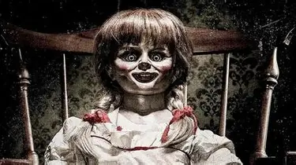

Annabelle is a 2014 American supernatural horror film directed by John R. Leonetti. The film is the second installment in the Annabelle franchise and follows the story of a young couple who move into a new home and encounter a malevolent spirit.